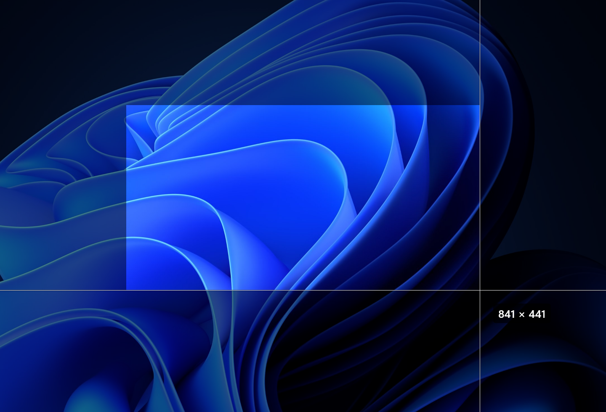
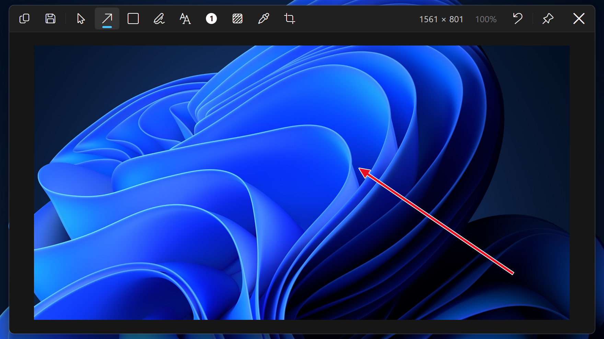
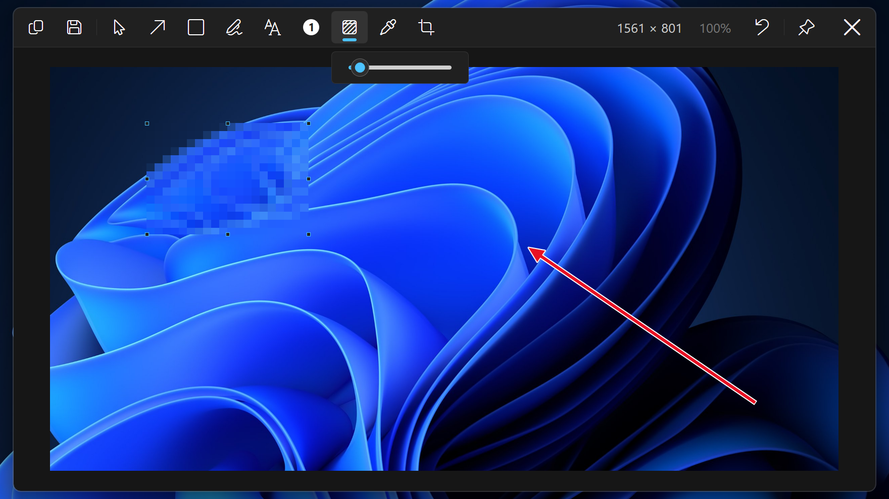
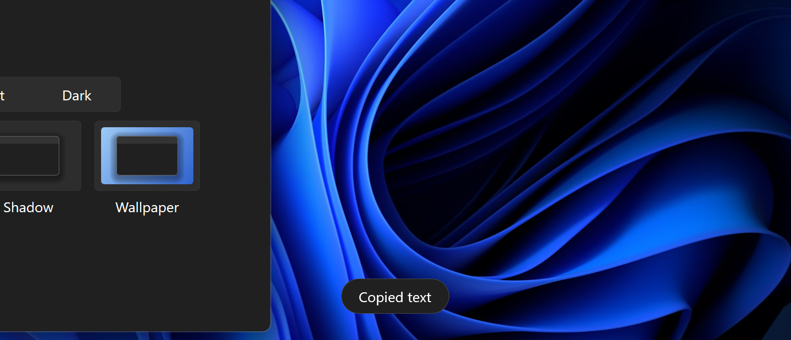

Screenshots for Windows 11
Capture, mark it up, copy.
Download from GitHubVersion 0.1.0 · 1.1 MB · Free and open source, MIT




Capture, mark it up, copy.
Download from GitHubVersion 0.1.0 · 1.1 MB · Free and open source, MIT



